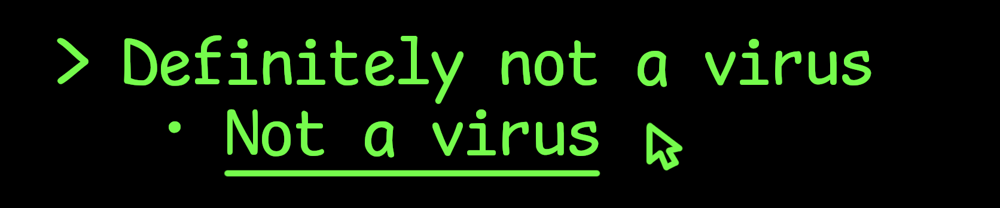
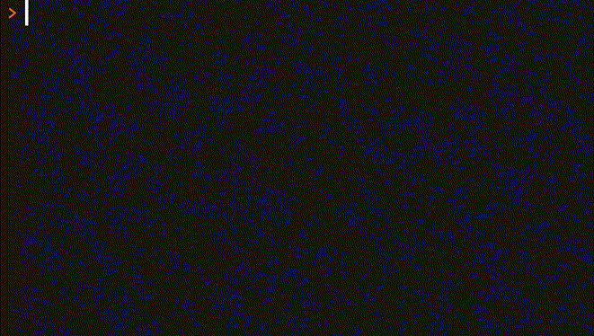

install.packages("remotes") # if not yet installed
remotes::install_github("matt-dray/choosethis")
tl;dr
The {cli} R package can help build clickable hyperlinks in the R console. Of course, I used this functionality for japes.
Error!
Have you noticed that tidyverse error messages are both helpful and pretty? This is in part due to Gabor’s {cli} package. Sometimes I make errors on purpose just to see these messages (that’s what I tell my colleagues, anyway).
Have you noticed that sometimes the error message will include a link that, when clicked, will execute some code to help explore the bug? When you hover over the link, you get a popup in RStudio showing you showing a green ‘play’ arrow, the name and description of the function and the phrase ‘click to run’.
That’s curious isn’t it?
How?
Functionally, {cli} functions accept {glue} strings that begin with a .run keyword and contain a Markdown hyperlink. Something like this: "{.run [function](package::function())}". The outcome is a link in the console that will execute the code when clicked.
You can read more about hyperlinks in the {cli} docs. There’s some limitations, including that your terminal must be capable of supporting this type of hyperlink (RStudio is capable). Note also that links are ‘experimental’.
You might be wondering if a bad actor could exploit this to execute arbitrary code. As per the {cli} docs, there are several restrictions in place:
To make
.runhyperlinks more secure, RStudio [will] not run code
- that is not in the
pkg::fun(args)form,- if args contains
(,)or;,- if it calls a core package (base, stats, etc.),
- if it calls a package that is not loaded, and it is not one of testthat, devtools, usethis, or rlang, which are explicitly allowed.
Note that this doesn’t stop nerd hobbyists like me from going off-piste.
Demos
I’ve made two quick sketches that use {cli}’s .run-enabled links. I’ve put these in the {choosethis} package, which is on GitHub.
These nonserious demos are pretty minimal and only exist to prove the point. Maybe you can take these ideas and run with them?
1. A clickable text adventure
You can set up a narrative in the console that prompts the user for an action to advance the story. Clicking a link takes you down a story branch and prompts you with a new set of options.

In other words, a classic text adventure in with the flavour of a ‘Choose Your Own Adventure’ book.
This works by setting up a function for each option. Click a link and it will run that function, which itself will present more clickable options with their own underlying functions. And so on. In this demo, the chain starts when the user runs choosethis::begin().
Of course, the more complicated the story, the more functions there are to create and maintain.
2. An R GUI
Adriana suggested that .run could be used to create a sort-of ‘clickable R interface’ to do away with all that pesky typing and emulate superior statistical packages like SPSS (lol).
But this is… tricky. First there’s the limitations of .run itself, but the user prompts could also become overwhelming. For example, if you want to summarise a data.frame. Which columns should be summarised? Do you want the sum or mean or something else? Should NAs be ignored? And so on.
I made a tiny demo of this anyway. The user runs choosethis::ask_col_means() with a data.frame and they’re presented the names of any numeric columns as clickable links. The dataframe and selected column name are passed to choosethis::get_mean(), a bespoke function for calculating the summary.

Yes, due to the limitations of .run, we need a separate function in the package to calculate the mean for us! You can see how tedious it would be to wrap loads of potential summary functions.
3. Bonus: de-linkification
It feels a bit mean to write an exciting text adventure that people can’t play if their terminal doesn’t support hyperlinks. So you can check the user’s console and either provide them an executable link, or otherwise print the underlying expression to copy-paste.
To perform this check, you can use cli::ansi_has_hyperlink_support()1. I added the argument show_links to the choosethis::begin() function that defaults to this:
getOption("choosethis.show_links", cli::ansi_has_hyperlink_support())By making this an option, the user can set options(choosethis.show_links = FALSE) to avoid seeing links even if their terminal supports them.
Hype man
So yeah, hyperlinks are ‘experimental’ in {cli} and—quite rightly—they’re limited to prevent nefarious activity. Everything I’ve created here might stop working tomorrow. And of course, the intent for links is to help people with errors, not mess around. But it is fun isn’t it?
I’d be interested to know if anyone is already using {cli}-enacted links in their packages, or if the ideas in {choosethis} spark some inspiration.
Environment
Session info
Last rendered: 2023-09-17 14:38:55 BSTR version 4.3.1 (2023-06-16)
Platform: aarch64-apple-darwin20 (64-bit)
Running under: macOS Ventura 13.2.1
Matrix products: default
BLAS: /Library/Frameworks/R.framework/Versions/4.3-arm64/Resources/lib/libRblas.0.dylib
LAPACK: /Library/Frameworks/R.framework/Versions/4.3-arm64/Resources/lib/libRlapack.dylib; LAPACK version 3.11.0
locale:
[1] en_US.UTF-8/en_US.UTF-8/en_US.UTF-8/C/en_US.UTF-8/en_US.UTF-8
time zone: Europe/London
tzcode source: internal
attached base packages:
[1] stats graphics grDevices utils datasets methods base
loaded via a namespace (and not attached):
[1] htmlwidgets_1.6.2 compiler_4.3.1 fastmap_1.1.1 cli_3.6.1
[5] tools_4.3.1 htmltools_0.5.5 rstudioapi_0.15.0 yaml_2.3.7
[9] rmarkdown_2.23 knitr_1.43.1 jsonlite_1.8.7 xfun_0.39
[13] digest_0.6.33 rlang_1.1.1 evaluate_0.21 Footnotes
Reuse
CC BY-NC-SA 4.0